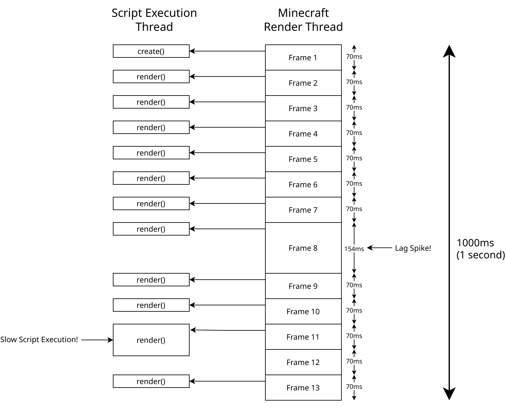

Scripting Documentation#
Info
This page serves as a documentation for the whole scripting system implemented in JCM, which includes Eyecandy/Decoration Block Scripting and PIDS Scripting.
JCM Scripting is a feature introduced in JCM v2.0.0. It serves as a testbed for scripting in MTR 4, as well as using JavaScript to control PIDS.
The system itself is heavily influenced by the Nemo Transit Expansion mod and shares much of the similarities. As such, most of the documentation include this page is also referenced from the NTE JS documentation.
Introduction#
What is JavaScript?#
JavaScript is a programming language that... in very simple terms, instructs computer to do stuff :D
It can describe logic, an example would be:
If there's pineapple on top of the pizza, then remove the pineapple and eat the pizza, otherwise eat the pizza.
This rest of this article assumes that you have a basic understanding of JavaScript and JavaScript types, so it won't delve into the basic syntax and other aspects of it here. You can learn JavaScript from resources on the web, such as here.
The Nature of Scripting in JCM#
While JavaScript is commonly associated with webpages or even server applications (via Node.js), JCM's implementation of JavaScript only utilize the language itself.
As such, this means that you only really need to care about the syntax (e.g. Variable & Function Declaration, conditional logic) as well as base object such as Date. Other stuff such as HTML/CSS/DOM manipulation does not apply to JCM Scripting.
Keep that in mind, as IDE (Such as Visual Studio Code) may assume you are developing for a webpage and provides suggestions that are not applicable to JCM/NTE scripting!
Do I have to learn Java to write JavaScript?#
JavaScript does not have anything, or not much to do with Java at all, even though they share "Java" in the name.
But can I use Java in JavaScript?#
Under normal circumstances, no.
However the JavaScript Engine that JCM/NTE uses, Rhino, do allow using classes from the standard Java library as java.package.name. Using classes from the MTR mod is not available yet, most likely due to problems with the class loader.
Script Flow#
Initial Parsing#
Instead of each train or block having it's own script instance, your JS scripts are parsed (Or rather, executed) once during the resource pack loading.
Your script are expected to have functions with specific name (e.g. create(), render(), dispose()).
These functions will be invoked by JCM/NTE with the parameter corresponding to a specific train/eyecandy/object, including a parameter (state) where you can store variables to that specific train.
Consider the following example of scripting applied to a train:
let displaySpeed = 1;
function create(ctx, state, train) {
state.displaySpeed = 0.75;
}
function render(ctx, state, train) {
state.displaySpeed++;
console.log("dp: " + state.displaySpeed);
}
function dispose(ctx, state, train) {
}
console.log(displaySpeed);
1 // The console.log at the bottom of the script, as the entire script is executed once during resource reload
dp: 1.75 // Train A rendering
dp: 2.75 // Train A rendering
// Assume Train B now enters the view
dp: 3.75 // Train A rendering
dp: 1.75 // Train B rendering
dp: 4.75 // Train A rendering
dp: 2.75 // Train B rendering
Execution#
An example flow is available below. This chart assumes the player is running Minecraft at 13fps (For simplicity sake), which means 13 frames in 1 second.

Immediately you may have noticed the following thing:
Scripts are executed asynchronously#
This means that the script runs in the background and does not prevent the game from continue rendering (Therefore, less fps lag).
Warning
This does not mean you can freely block script execution or run some Thread.Sleep, as you would then be blocking the script execution thread, making others (and your) script run slower!
Scripts are executed every frame#
More precisely, the render() function is executed every frame.
If there's a lag spike (Seen in Frame 8), your script would be not be called until the next frame came around, which is 154ms later in the above example.
As such, you should not assume that your function will always be called "x times per second", or "xx ms after the last one".
This also means that if you increment a variable by a fixed amount for each frame, that increment speed won't be the same if the fps is higher/lower.
Delta timing is used to solve this by obtaining the time since last frame, which can then be used to balance out the value.
Except they aren't always executed every frame!#
While JCM tries to call the render() function for every frame, it is only made on a best-effort basis. If your script has not finished executing before the next frame came around, then your function won't be called again until it has finished execution.
Errors#
Note
Script errors are currently not displayed within the game (Like NTE had with debug mode), you need to check for errors in the game log, usually accessible by your launcher
If the script is executed incorrectly, an error will be reported in the Minecraft log (Starting with [Scripting] Error executing script!).
The error message will indicate which line of code in which script file the error occurred. Most launchers have the ability to display logs in a separate window in real time.
The script execution engine will then pause the entire script for 4 seconds before trying to execute the function again.
Documentation Format#
As you know, values in JS have different types. When calling a function, you must pass parameters of the appropriate type, and the result it returns will also have a type. In this article, all of the functions have their parameter and return types stated.
This scripting documentation will follow the following example:
staticmeans that you don't need to create an object to use this function, you can callResources.id("aaa:bbb")directly.idStr: stringmeans that theidStrparameter accepts a string.: Identifiermeans that a function call will return a value of typeIdentifier.
And here's another example:
- The lack of
staticmeans that an object is required to execute the function. For example, ifais an object of Matrices type, then the function can be called asa.rotateX(Math.PI). radian: floatmeans that the parameter takes a numeric argument. Although JS does not distinguish between integers and fractional numbers, this article will specify a specific type -int,long,floatordouble- to make it clear whether a parameter can accept decimal parts and to what precision.: voidmeans that the function has no return value.
Access of Java class#
To prevent misuse of scripts, script may only access java classes from the following packages:
com.lx862.jcm.mod.scripting.*org.mtr.*java.awt.*java.lang.*sun.java2d.*java.util.*
Tips & Notes#
Declaring variables using let or var#
Both JCM/NTE uses JavaScript's strict mode, which does not allow variables to be assigned without first declaring them.
This means you can't do local = 1 and expect local to be automatically defined.
Instead, you have use syntax like var glb; or outside a function var glb = 1;. For local variables inside a function, use let local; or let local = 1;.
Translator Note
In general, it is better to always try to use let and resort to using var as a last resort.
Don't Block Or Infinitely Loop#
The function you wrote are called once per frame by JCM, where your function is expected to finish processing and return a value as soon/fast as possible. As such, there's no such concept as “wait for a while before continue executing”.
Instead, what you likely want is to "do a thing later on", in such case you will need to time it and then execute the appropriate action on a call made at the right time.
If you are trying to execute a long-running operation (e.g. Fetching data over the internet), you should submit it to another thread/executor.
If blocks or infinite loops did occur, then the entire script execution will stall as scripts are executed one at a time [in the same thread]. In such situation, you can reset it by pressing F3+T on your keyboard, which reloads the resource pack and resets the scripting thread.
Interoperability between Java Classes/Methods#
For common function types such as strings, Java and JavaScript have different class implementations, which causes there to be JavaScript strings as well as Java strings.
NTE/MTR functions and fields return Java string classes rather than JavaScript strings, but Rhino does some conversions automatically, so in most cases you can mix and match, but sometimes this can cause problems.
For example, here's an example of a problem caused by using str.length() from a Java string class and str.length from a JavaScript string class to get the length of a string:
var stationName = train.getThisRoutePlatforms().get(0).station.name;
print(stationName.length); // Error: stationName is a Java string, not a JavaScript string
print(stationName.length()); // Java strings get their length from the length() function, not the JavaScript length field
print((""+stationName).length) // Use ""+ to turn it into a JavaScript string.
List<T> type in Java. It does the same thing as arrays in JavaScript, but has a different type. Trying to call JavaScript array functions on it won't work, but Rhino adapts it so that you can take values with list[0] or loop through them with for (a of list).
What JavaScript features are supported?#
The Rhino JavaScript Engine does not support all of the latest JavaScript features. See Mozilla's documentation for details on what is supported. JCM uses Rhino 1.7.15 with the VERSION_ES6 flag enabled.
Including Other Scripts#
By calling the function below, you can include and execute other JavaScript files.
| Functions | Description |
|---|---|
static include(relPath: String): void |
Loads and runs another JS file relative to the current JS file. |
static include(path: Identifier): void |
Loads and runs the JS file by location in the resource pack. For example: include(Resources.id(“mtr:path/absolute.js”)). |